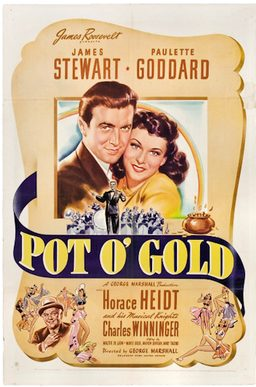

Pot o' Gold
Studio: United Artists
Starring: James Stewart, Paulette Goddard, Charles Winninger
Director: George Marshall
Writer: Walter DeLeon
Producer: James Roosevelt
Pot o' Gold is a 1941 American romantic musical comedy film starring James Stewart and Paulette Goddard, directed by George Marshall, and based on the NBC radio series Pot o' Gold. The film was released by United Artists on April 3, 1941, eight months before the aforementioned NBC radio series came to an end. Paulette Goddard's singing voice was dubbed by Vera Van.
Watch Online: Internet Archive
Trivia
- Pot o' Gold was radio's first big-money giveaway program, garnering huge ratings within four weeks of its 1939 debut.
- The program's success prompted production of the film.
- The premise of the radio program, created by Ed Byron, was that any person who picked up the telephone when host Horace Heidt called would automatically win $1000.
Previous Showings
2 Runs • 1 Festival
Original Billings: 1 run (August 7, 1941)
Original Run: August 7, 1941 (Thursday)
All runs on record (2):
- August 7, 1941 (Thursday)James Stewart, Paulette Goddard
- June 12 - 13, 2019James Stewart Festivalw/ The Glenn Miller Story